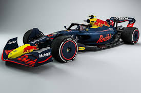
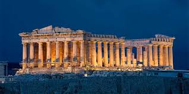

Galería de Imágenes

¡México campeón! 🇲🇽✨ Un triunfo que llena de orgullo y emoción a toda la nación. Con coraje, pasión y dedicación, ¡hemos demostrado que cuando jugamos como equipo, todo es posible! ¡Viva México!

Lionel Messi juega actualmente en el Inter Miami, marcando un nuevo capítulo en su carrera fuera de Europa. El Real Madrid está en plena transición, con jóvenes promesas como Jude Bellingham liderando el equipo.
Max Verstappen ha dominado la Fórmula 1 en los últimos años, ganando múltiples campeonatos consecutivos con Red Bull Racing.
Atenas es considerada la cuna de los Juegos Olímpicos, ya que fue la ciudad sede de la primera edición de los Juegos Olímpicos de la era moderna en 1896.